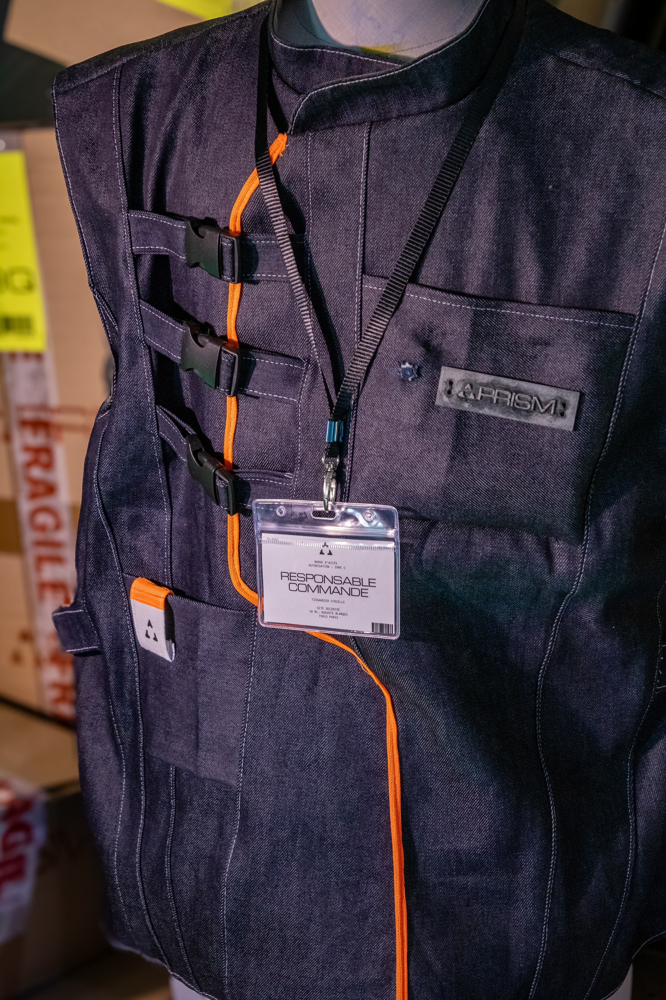
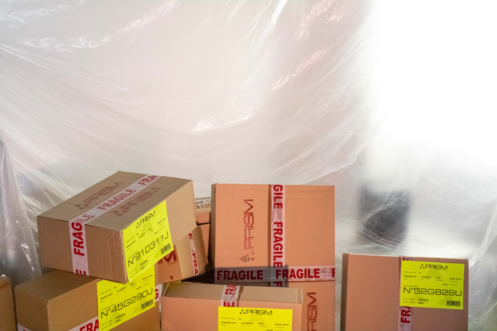
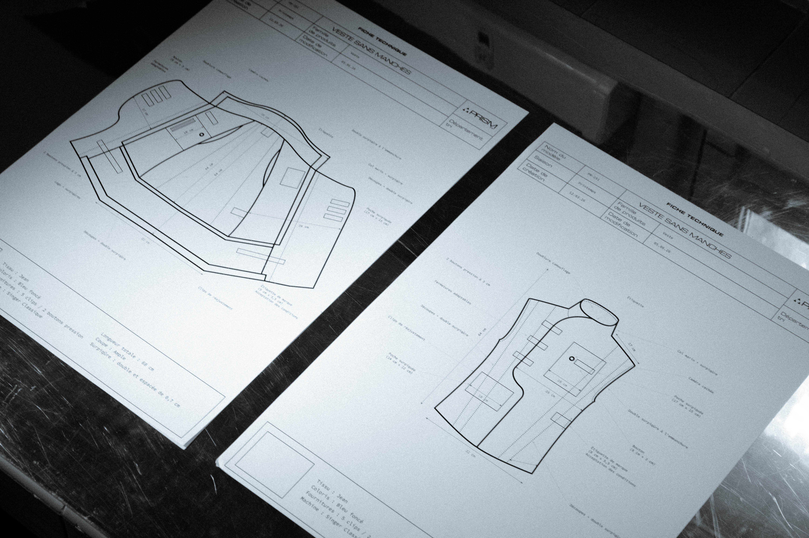
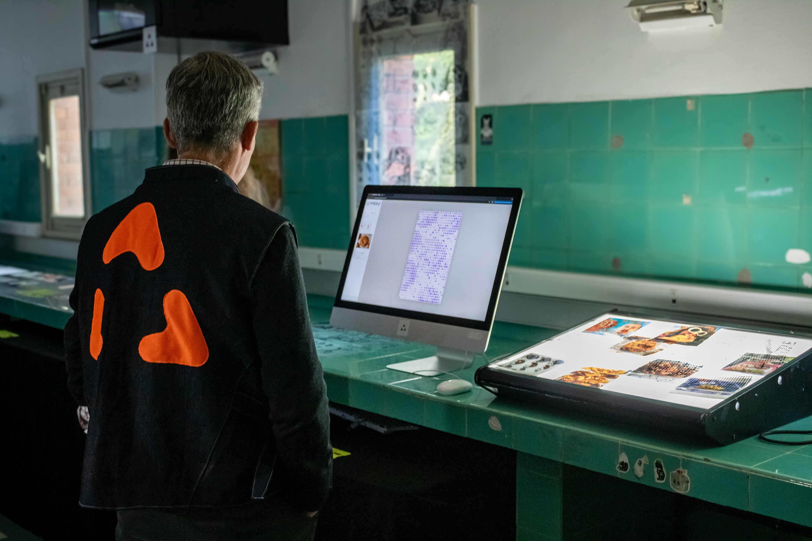

Un bug, un son, un indice suffisent à faire naître le doute. C'est aux participants de comprendre qu'ils ne sont pas seulement employés de PRISM Corp., ils en sont aussi la donnée.

Les participants incarnent de nouveaux employés de PRISM Corporation. En acceptant un contrat sans le lire, en exécutant des tâches sans en comprendre le sens et en étant observés à leur insu, ils rejouent dans un espace physique les mécanismes à l'œuvre sur les plateformes numériques.


L’expérience se déroule dans deux espaces. Les participants incarnent de nouveaux employés de PRISM Corporation. Munis d’une veste, d’un téléphone de focntion, guidés par des consignes simples, ils exécutent des tâches répétitives sans en comprendre le sens. Derrière cette routine se cache une réalité : l’entreprise prospère grâce à la surveillance et à la monétisation du comportement de ses employés.


De leur côté, les hackers de Hippo.2.3 ont infiltré PRISM Corp. pour réunir des preuves et pousser les employés à découvrir ce qui se cache derrière leur travail, en leur envoyant discrètement des indices sur leurs téléphones.